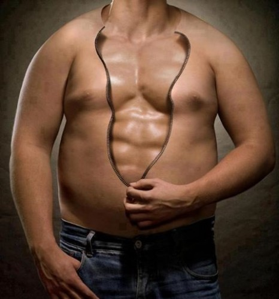

comenzaremos viendo la dieta de volumen
Objetivos de las dietas para ganar masa muscular
-Aumento de peso corporal en personas delgadas.
-Fase de volumen muscular para entrenamiento de culturistas.
-Aumento de fuerza, muscular para practicantes de cualquier deporte.
-Desarrollo de músculo en personas muy activas
-Primer paso en el desarrollo muscular en nuevos practicantes de actividades de musculación en gimnasios.
dieta de mantenimiento
Objetivos de las dietas para lograr un mantenimiento muscular

-mantenimiento de la masa muscular.dieta de definicion
Objetivos de las dietas para lograr una perdida de grasa y definición muscular
-definicion de la masa muscular magra que tengamos con la perdidad de grasa.
-ultima fase del proceso y la mas dificil de llevar a cabo por el gran sacrificio.
-perdida de parte del volumen pero con la consiguiente definicion
-ultimo paso en el desarrollo muscular en nuevos practicantes de actividades de musculación en gimnasios.
{kind=link}
{kind=link}
{kind=link}